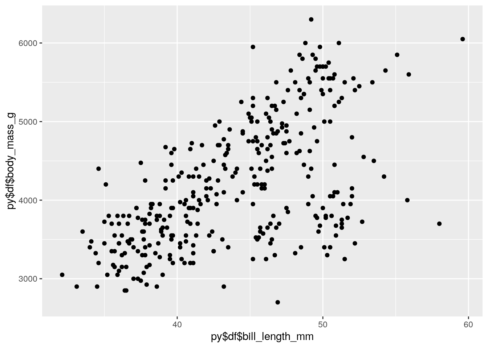

Learning about Python in my computational statistics course was my first introduction to the platform and I have to say, I was pleasantly surprised to find out it wasn't as bad as people made it out to be. I still personally enjoy using R studio over Python, but I may just be a little biased since I started this coding journey on the R platform. It is interesting to see however, that Python is capable of doing a majority of the work that R can do and sometimes even more.
One of the things I found particularly interesting is the ability for the two platforms to communicate! Say for instance you want to grab a data set that is already installed in R, but you want to be able to easily learn more about the data set using Python. Well I have the perfect solution for you!
Go ahead and load the reticulate package and grab the data set of your interest
library(reticulate)
quakes <- quakesNow, try getting some of the summary statistics using python with the data set you pulled from R....go ahead, there's nothing to be afraid of, I promise this works!
import numpy as np
r.quakes.describe() ## lat long depth mag stations
## count 1000.000000 1000.000000 1000.000000 1000.000000 1000.000000
## mean -20.642750 179.462020 311.371000 4.620400 33.418000
## std 5.028791 6.069497 215.535498 0.402773 21.900386
## min -38.590000 165.670000 40.000000 4.000000 10.000000
## 25% -23.470000 179.620000 99.000000 4.300000 18.000000
## 50% -20.300000 181.410000 247.000000 4.600000 27.000000
## 75% -17.637500 183.200000 543.000000 4.900000 42.000000
## max -10.720000 188.130000 680.000000 6.400000 132.000000Another cool trick in Python is indexing a data frame. Say we only want to look at the variables long, lat, and depth in the quakes data set from R. Say no more!
r.quakes[["long", "lat", "depth"]]## long lat depth
## 0 181.62 -20.42 562
## 1 181.03 -20.62 650
## 2 184.10 -26.00 42
## 3 181.66 -17.97 626
## 4 181.96 -20.42 649
## 5 184.31 -19.68 195
## 6 166.10 -11.70 82
## 7 181.93 -28.11 194
## 8 181.74 -28.74 211
## 9 179.59 -17.47 622
## 10 180.69 -21.44 583
## 11 167.00 -12.26 249
## 12 182.11 -18.54 554
## 13 181.66 -21.00 600
## 14 169.92 -20.70 139
## 15 184.95 -15.94 306
## 16 165.96 -13.64 50
## 17 181.50 -17.83 590
## 18 179.78 -23.50 570
## 19 180.31 -22.63 598
## 20 181.16 -20.84 576
## 21 166.32 -10.98 211
## 22 180.16 -23.30 512
## 23 182.00 -30.20 125
## 24 180.28 -19.66 431
## 25 181.49 -17.94 537
## 26 167.51 -14.72 155
## 27 180.79 -16.46 498
## 28 181.47 -20.97 582
## 29 182.37 -19.84 328
## .. ... ... ...
## 970 182.38 -25.79 172
## 971 184.50 -23.75 54
## 972 184.50 -24.10 68
## 973 169.05 -18.56 217
## 974 184.68 -23.30 102
## 975 185.74 -17.03 178
## 976 183.71 -20.77 251
## 977 183.50 -28.10 42
## 978 182.26 -18.83 575
## 979 170.70 -23.00 43
## 980 181.67 -20.82 577
## 981 170.56 -22.95 42
## 982 183.60 -28.22 75
## 983 183.50 -27.99 71
## 984 187.15 -15.54 60
## 985 166.93 -12.37 291
## 986 171.66 -22.33 125
## 987 170.30 -22.70 69
## 988 181.30 -17.86 614
## 989 184.53 -16.00 108
## 990 181.42 -20.73 575
## 991 181.42 -15.45 409
## 992 183.86 -20.05 243
## 993 181.37 -17.95 642
## 994 188.10 -17.70 45
## 995 179.54 -25.93 470
## 996 167.06 -12.28 248
## 997 184.20 -20.13 244
## 998 187.80 -17.40 40
## 999 170.56 -21.59 165
##
## [1000 rows x 3 columns]Not only can we pull data sets from R and use Python functions on them, but we could also do it the other way around. Check this out, we are going to make a graph using R studio's ggplot function using a data set from Python.
import seaborn as sns
penguins=sns.load_dataset('penguins')
df=penguinslibrary(ggplot2)
ggplot()+geom_point(aes(py$df$bill_length_mm,py$df$body_mass_g))## Warning: Removed 2 rows containing missing values (geom_point).
The world becomes our oyster with the ability to communicate between R and Python, at least in the coding world. Now instead of battling between the two platforms, we can have the best of both worlds :)